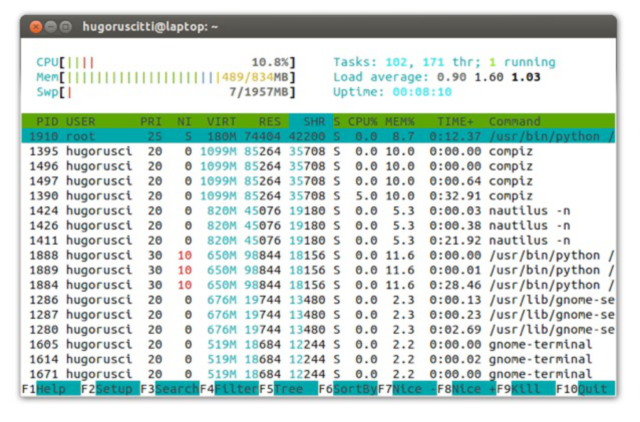

Procesos Linux
index | OSiUX | blog | docs | charlas
¿Qué es proceso?
- Un proceso es la instancia de un programa en ejecución.
- También se lo conoce como tarea.
¿Por qué?
- GNU/Linux es un sistema multitarea, permite la ejecución de múltiples procesos al mismo tiempo.
- Comprender el concepto de procesos nos permite administrar el rendimiento de nuestro equipo.
Lo que el usuario ve:

Lo que el sistema ve:


PID
- Todo proceso que se inicia tiene un número asignado llamado PID.
- Este PID permite identificar el proceso y administrarlo (detenerlo, reanudarlo etc…)
- Ejemplo: Para obtener el PID de un proceso podemos usar el
comando
pidof:pidof init emacs
1 15787
Listar procesos
El comando ps puede listar el estado de los procesos:

Operaciones
Los procesos se pueden controlar de manera externa.
El comando kill, xkill o killall permite enviarle señales a
los procesos. Por ejemplo la señal de terminación:

Jerarquía
El comando pstree nos permite ver la organización de los procesos en ejecución:
ps -fax | grep -A 10 bash | head
2686 ? S 50:52 /bin/bash /usr/share/siguibui/backend/shellserver.sh --daemon 21395 ? S 0:00 \_ sleep 1 2691 ? S 2:54 /usr/bin/python /usr/share/pywwetha/pywwetha.py --daemon 2692 ? Ss 0:00 /usr/sbin/acpi_fakekeyd 2731 ? Ss 0:28 /usr/sbin/acpid 2935 ? Ss 0:30 /usr/sbin/apache2 -k start 3138 ? S 0:00 \_ /usr/sbin/apache2 -k start 3139 ? S 0:00 \_ /usr/sbin/apache2 -k start 3140 ? S 0:00 \_ /usr/sbin/apache2 -k start 3141 ? S 0:00 \_ /usr/sbin/apache2 -k start
pstree -p -U | head
init(1)─┬─NetworkManager(3472)─┬─dhclient(3639)
│ ├─{NetworkManager}(3518)
│ └─{NetworkManager}(3662)
├─accounts-daemon(4022)───{accounts-daemon}(4024)
├─acpi_fakekeyd(2692)
├─acpid(2731)
├─apache2(2935)─┬─apache2(3138)
│ ├─apache2(3139)
│ ├─apache2(3140)
│ ├─apache2(3141)
En tiempo real
Para visualizar los procesos en ejecución, también se puede usar
htop o top:
export TERM=linux top -b -n1 | head -20
top - 18:34:37 up 11 days, 1:02, 6 users, load average: 0,76, 0,88, 0,86
Tasks: 180 total, 1 running, 179 sleeping, 0 stopped, 0 zombie
%Cpu(s): 13,9 us, 4,8 sy, 0,0 ni, 80,1 id, 0,6 wa, 0,5 hi, 0,2 si, 0,0 st
KiB Mem: 2044852 total, 1709304 used, 335548 free, 89148 buffers
KiB Swap: 0 total, 0 used, 0 free, 600420 cached
PID USER PR NI VIRT RES SHR S %CPU %MEM TIME+ COMMAND
8203 root 20 0 121m 18m 6500 S 5,9 0,9 3:47.59 Xorg
26355 osiris 20 0 26096 1488 1080 R 5,9 0,1 0:00.02 top
1 root 20 0 10648 788 652 S 0,0 0,0 0:12.03 init
2 root 20 0 0 0 0 S 0,0 0,0 0:00.16 kthreadd
3 root 20 0 0 0 0 S 0,0 0,0 14:15.93 ksoftirqd/0
6 root rt 0 0 0 0 S 0,0 0,0 0:00.00 migration/0
7 root -2 0 0 0 0 S 0,0 0,0 3:50.22 rcuc/0
8 root rt 0 0 0 0 S 0,0 0,0 0:00.00 rcun/0
9 root -2 0 0 0 0 S 0,0 0,0 0:00.00 rcub/0
10 root rt 0 0 0 0 S 0,0 0,0 0:00.00 rcun/1
11 root -2 0 0 0 0 S 0,0 0,0 0:00.00 rcub/1
12 root rt 0 0 0 0 S 0,0 0,0 0:00.00 migration/1
14 root -2 0 0 0 0 S 0,0 0,0 5:24.04 rcuc/1

Resumen
- Los procesos son instancias de programas en funcionamiento.
- Los recursos del sistema son limitados, el sistema administra y hace posible compartir recursos.
- Cada proceso tiene un identificador (
PID), que nos sirve para enviar señales.
Changelog
migro slides pdf de Hugo Ruscitti a .org